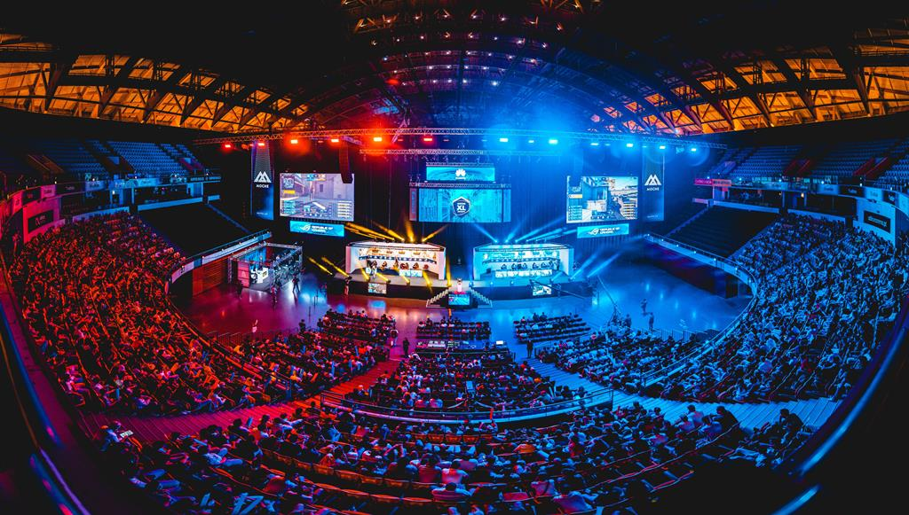
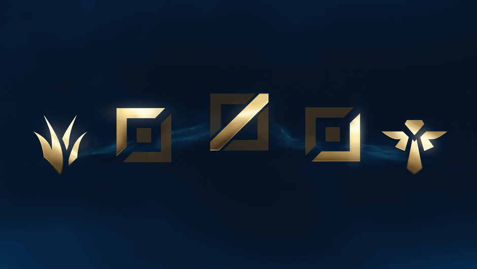
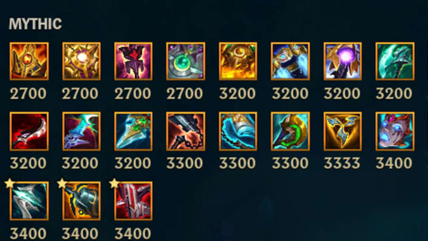

League of Legends
League of Legends, criado pela Riot Games é o jogo mais jogado no
mundo e tem algumas regras básicas de jogabilidade que são aprofundadas
neste relatório, onde é explicado como é que o jogo em si funciona. Como
é um jogo mundialmente conhecido que tem uma base de jogadores enorme,
tem vários servidores espalhados pelo mundo. É também abordado o tema
do impacto negativo do jogo nas pessoas, como tal, o próprio jogo tem um
sistema de bans. Para além dos vários modos de jogo acessíveis, há também
uma grande quantidade de operações que o jogador pode fazer no cliente do
jogo, sem ser entrar numa partida. Este jogo tem 153 campeões atualmente
(número que continua a crescer, aproximadamente 6 vezes por ano), sendo
que cada campeão tem a sua história e origem. Para conhecermos a história
de cada campeão, as suas relações ou contos de cenas que se passaram em
Runeterra, existe a lore de cada campeão, existem músicas, cinemáticas e até
bandas desenhadas.
Existe também, o mundo dos Esports, que é uma das várias
maneiras dos desenvolvedores lucrarem com o jogo. Os Esports, no contexto de
League of Legends, podem ser resumidos na criação e organização de eventos
e torneios em que os melhores jogadores mundiais competem, quer seja por uma
recompensa monetária, pelo reconhecimento ou apenas por simples diversão,
que afinal de contas, é o verdadeiro objetivo do jogo.

Existem 3 modos de jogo principais.
Summoners Rift: Modo de jogo que contem diferentes tipos de experiências:
- Blind pick (modo de jogo onde não existem bans)
- Normal draft pick (modo de jogo onde existem bans)
- partida ranqueada solo/duo (para jogar sozinho ou com um amigo)
- partida ranqueada flex(Jogar sozinho ou com um grupo de até 5 amigos, exceto 4)
Sendo os modos Normal, para uma experiência
mais casual e os modos de partidas ranqueadas para uma experiência mais
competitiva.
All Random All Mid (ARAM): Um modo em que o Champion escolhido é
aleatório e o mapa é uma única lane, com Summoner Spells únicos.
TFT- modo onde 8 jogadores competem construindo uma equipa, com o
objetivo de serem os últimos a permanecer de pé.
Existem 5 roles no LoL.
Top laner: Jogador que se encontra na lane no topo do mapa, jogadores que
usualmente jogam com tanks ou duelistas, cujo trabalho é muitas vezes ser o
"frontline" da equipa ou causar pressão nas lanes laterais.
Jungler: O jungler é o jogador que não se encontra em nenhuma lane, mas
sim entre lanes, cujo trabalho é obter objetivos para a equipa e ajudar os laners
nas suas respetivas lanes.
Mid laner : Jogador que se encontra na lane do meio do mapa, jogador que
geralmente joga de assassinos ou de magos, cujo trabalho é eliminar o adversário
mais forte.
Botlane: Jogador que se encontra na lane inferior do mapa, geralmente
acompanhado pelo support: Este role é muitas vezes associado a ser jogado
por Campeões mais late game, o trabalho do botlaner é fazer o dano no fim
do jogo, sendo muitas vezes este o foco dos assassinos e magos da midlane.
Support: O support é o jogador que acompanha o botlaner, durante a �laning
phase�, ou seja a fase inicial do jogo. O trabalho do support é manter a equipa
viva ou assistir a equipa no que esta precisar. Estes jogadores são conhecidos
por jogar de tanks com muito Crowd Control (CC) ou de healers (personagens
que curam ou usam escudos para proteger a equipa aliada).

Os summoner spells são habilidades escolhidas no champion select que os jogadores podem usar nos seus campeões durante o jogo. Existem, atualmente, 11
spells diferentes. Sendo dois deles exclusivos ao modo de jogo ARAM. Cada um apresenta um efeito único.
Heal: Cura e aumenta a velocidade de movimento do utilizador e do campeão aliado mais próximo.
Ghost: Aumenta a velocidade de movimento do utilizador durante um extenso período de tempo.
BarrierGarante um escudo que absorve dano ao utilizador.
Exhaust: Enfraquece um inimigo, diminuindo o seu dano e a sua velocidade de movimento.
Flash Transporta o seu personagem uma curta distância, podendo passar paredes.
Teleport Teletransporta o utilizador para uma estrutura, minion ou objetos criados por outros campeões aliada, em qualquer lugar do mapa.
Smite Causa dano consoante o nível do utilizador, a minions e monstros.
Cleanse Remove todo o CC e outros efeitos negativos no personagem.
Ignite Causa dano, revela e aplica um efeito que reduz a quantidade de cura que o inimigo recebe.
Mark e Clarity Ambos são exclusivos do game mode ARAM.Mark teletransporta o utilizador até ao inimigo atingido com um projétil.Clarity cura 50% da mana total e 25% da mana do aliado mais próximo, respetivamente.
Os items são equipamentos que servem o propósito de tornar os campeões que os
equipam mais fortes (Fornecendo aos utilizadores diversos tipos de stats). Estes
podem ser trocados na base aliada por ouro obtido ao "farmar" Minions ou ao
esperar (ouro vai sendo gerando durante o jogo). No entanto, cada jogador só
tem espaço para seis items no seu inventário de cada vez. Existem três categorias
de items: Miticos, Lendários e comuns.
Míticos: Cada membro da equipa só pode ter um único item Mítico no seu
inventário, no entanto estes items contêm efeitos únicos que bene�ciam todos
os items lendários.
Lendários: Os itens lendários são a segunda categoria de itens mais fortes
somente atrás dos míticos, com várias habilidades únicas que permitem aos seus
utilizadores stats fortes, mas sem o beneficio de otimizar os outros itens do
inventário.
Comuns: Os itens comuns são os itens que devolvem menos stats, no entanto,
juntos com outros e ouro, formam items lendários ou míticos.
Os items funcionam como uma árvore e as suas raízes, os vários itens comuns
(raízes) juntos vão formando lendários (árvore). Os míticos são semelhantes aos
lendários mas com o efeito extra de serem únicos no inventário e darem bónus de
stats aos outros itens lendários na build. Os vários stats que os items fornecem
são: Vida, mana, dano de ataque, dano mágico, armadura, resistência mágica,
velocidade de movimento, redução do tempo para o uso de habilidades, etc...
Existem também consumíveis, que são items básicos do jogo, sendo estes poções
que regeneram vida ou elixires que aumentam os stats durante alguns minutos.

Os ranks são a maneira de distinguir o nível de habilidade de cada jogador.
Existem atualmente 9 ranks diferentes. Sendo estes por ordem crescente. Ferro,
Bronze, Prata, Ouro, Platina, Diamante, Mestre, Grão-Mestre e Desafiante. Estes ranks são exibidos no perfil do jogador. Juntamente com
o nivel e com uma imagem de fundo de um champion ou skin que o utilizador tenha comprado.